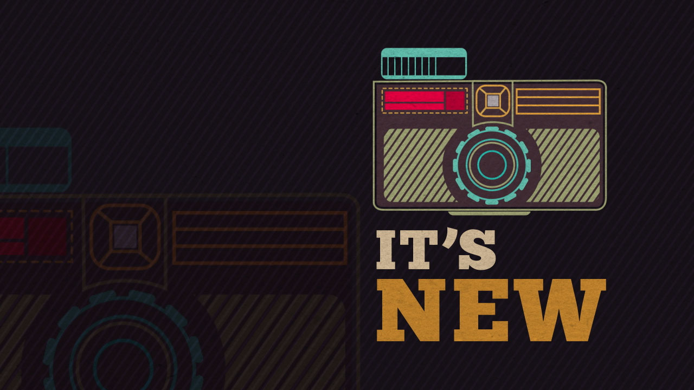
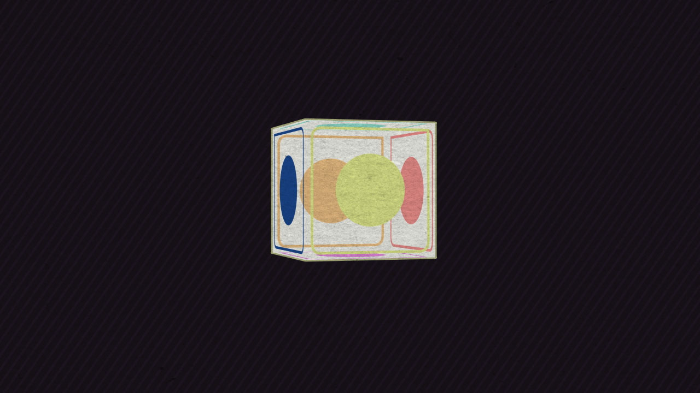
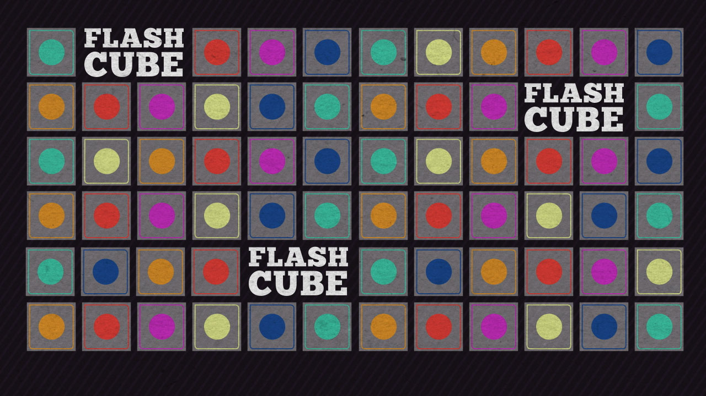

kodak
"It's Flashcube (Experimental)"
Before Instagram, there was Flashcube for Kodak Instamatic Cameras. In this experimental piece that borrows audio from a 1960’s Kodak commercial, Artifact Senior Designer Christina Maloney was drawn to the idea of combining that swingin' 60's vibe with the latest design trend – simple, geometric shapes, to create that groovy harmony where old meets new. 60's photography meets 21st century design and animation techniques, instamatically. It’s Flashcube!
style frames



